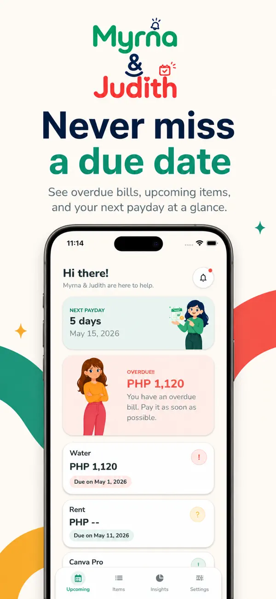
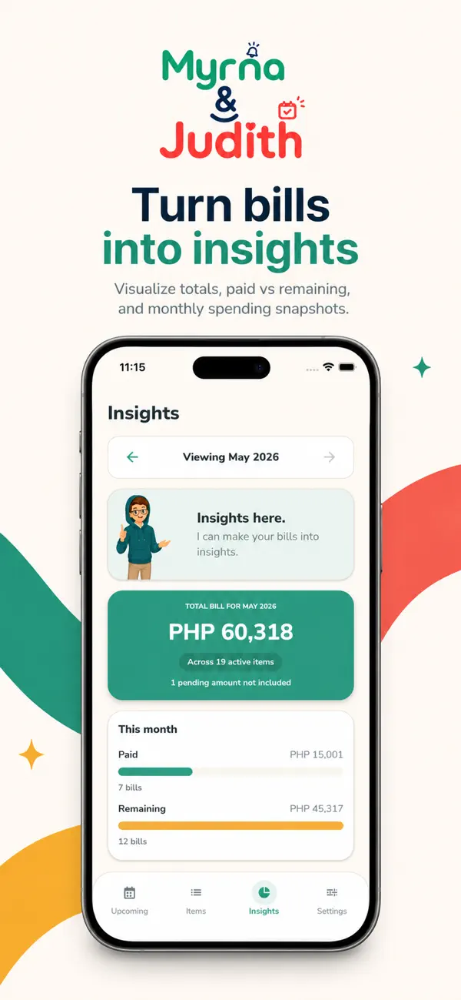

Myrna & Judith
A friendlier way to keep up with bills and payday.
I created Myrna & Judith to bring bill tracking, payday countdowns, and local reminders together in an offline app. It works without a user account or backend.
Get it on the App Store· Visit the website· Android information


What I built
Shared UI and business logic across Android and iOS with Kotlin Multiplatform and Compose Multiplatform.
An offline-first experience with local storage and notifications.
Bill tracking, payday countdowns, and reminders without requiring an account.
Firebase Analytics and Crashlytics integration.
End-to-end App Store and Google Play release preparation and management.
From idea to release
I built and launched the initial production-ready version in two weeks using an AI-assisted development workflow.
That work covered implementation, product design, branding, marketing assets, testing, and release preparation. The iPhone app is available on the App Store; the Android page carries the current access information.